의공산업기사 (2017-03-05 기출문제)
1과목: 기초의학 및 의공학
1. 신경세포에 관한 설명 중 틀린 것은?
- 중심소체(centrole)가 없어 세포분열이 불가능하다.
- 하나의 축색돌기는 한 개의 축새(axon)만을 갖는다.
- 마이엘린(myelin)은 축색을 감싸고 있다.
- 각각신경세포의 신경섬유는 원심성 신경 섬유이다.
(정답률: 59%)

2. 온도를 측정하는 센서로 틀린 것은?
- 서미스터
- 압전 센서
- 열전쌍
- 금속저항 온도계
(정답률: 87%)
3. 다음 그림과 같은 표면적극은?
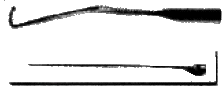
- 미세와이어 전극(Fine-wire elecrtrode)
- 금속판 전극(Metal-plate electrode)
- 플로팅 전극(Floating electrode)
- 흡판 전극(Suction electrode)
(정답률: 88%)
4. 골격(뼈)의 기능에 해당하지 않는 것은?
- 지지기능
- 보호기능
- 해독기능
- 조혈기능
(정답률: 92%)
5. 물질에서 일어난 변위 또는 압력변화에 의한 전위를 측정하는 센서는?
- 압전 센서
- 용량성 센서
- 열전쌍 센서
- 유도선 센서
(정답률: 92%)
6. 동잡음을 유발하는 원인이 아닌 것은?
- 전하의 이중층
- 반번지 전위의 변화
- 전극과 전해질간 전화의 활발한 이동
- 전극과 전해질의 상대적인 이동
(정답률: 74%)
7. 한 개의 측정되는 양의 참값과 측정된 값과의 차이를 참값으로 나눈 것은 무엇인가?
- 재현성
- 정확성
- 안정성
- 선형성
(정답률: 86%)
8. 측정 대상에서 얼마간 떨어진 곳에서도 측정이 가능한 센서는?
- 서미스터
- 외압계
- 적외선 체온계
- 맥파전파속도계
(정답률: 91%)
9. 세포 내에서 Na+과 K+의 농도에 대한 설명으로 옳은 것은?
- K+, Na+ 모두 높다.
- K+, 은 낮고, Na+은 높다.
- K+, Na+ 모두 낮다.
- K+은 높고, Na+은 낮다.
(정답률: 84%)
10. 어떤 생체표면전극의 단위면적당 저항이 R[Ω/cm2]이라고 할 경우 전체면적이 S[cm2]인 표면전극의 저항은?
- CR[Ω]
- R[Ω]
- R/S[Ω]
- S[Ω]
(정답률: 80%)
11. 온도변화에 따라 전기저항이 크게 변화하는 반도체 감온 소자를 말하며, 온도에 대하여 안정적이고 온도 특성의 재현성이 좋아 의료용으로 온도계와 부육기의 체온 감지에 사용되는 소자는?
- 서미스터(thermistor)
- 측온 저항체
- 열전쌍(thermocouple)
- LVDT
(정답률: 74%)
12. 전해질 겔에 대한 설명으로 옳은 것은?
- 피부 각질층의 저항을 증가시킨다.
- 전극과 피부의 접촉면을 줄여준다.
- 전극과 피부를 절연시킨다.
- 전극과 피부간의 접촉을 유지시켜 준다.
(정답률: 89%)
13. 휴지 전위(resting potential)와 관련 있는 것은?
- H2O
- O2
- K+이온
- Da+이온
(정답률: 92%)
14. 일반적으로 이용되는 서미스터는 부특성 서미스터이다. 다음 중 부특성 서미스터의 성질로 옳은 것은?
- 온도가 높아지면 저항값이 작아진다.
- 온도가 높아지면 저항값이 커진다.
- 온도가 높아지면 저항값이 일정하다가 온도가 일정값 이상이 되면 약간 커진다.
- 저항값은 온도의 영향을 받지 않는다.
(정답률: 71%)
15. 혈액 속에서 이산화탄소가 운반되는 방식으로 틀린 것은?
- 중탄산이온(HCO3-)형태로 운반
- 이산화탄소가 혈장에 직접 용해되어 운반
- 혈액 내의 단백질(헤모글로빈 등)과 결합하여 운반
- 혈액 내 요소와 결합하여 운반
(정답률: 62%)
16. 심전도에 대한 설명으로 틀린 것은?
- 심방의 탈분극은 P파로 기록된다.
- 심전도의 심방과 심실의 탈분극과 재분극에 의해 발생된 전위를 체표면에서 기록한 그래프이다.
- 심실의 탈분극은 QRS complex로 기록된다.
- 일반적으로 심실의 재분극은 QRS complex에 붇혀 구분이 어렵다.
(정답률: 84%)
17. 다음의 생체신호를 측정하는데 사용하는 전극들 중에서 그 성격이 다른 것은?
- 금속판 전극(metal-plate electrode)
- 가요성 전극(flexible electrode)
- 건식 전극(dry electrode)
- 와이어 전극(wire electrode)
(정답률: 69%)
18. 생체조직의 전기전도도가 조직의 양에 비례한다는 원리를 이용한 측정 방법은?
- 랩온어칩(lad-on-a-chip)
- 교류저항 혈량 측정법(impedance plethysmography)
- 선형 보간법(linear interpolation)
- 전기 영동법(electrophoresis)
(정답률: 75%)
19. 인체의 장기 중 인슐린을 분비하는 곳으로 이 장기가 없으면 당뇨병에 걸리는 것은?
- 췌장
- 신장
- 폐
- 심장
(정답률: 90%)
20. 다음 ( ) 안에 공통으로 들어갈 내용은?
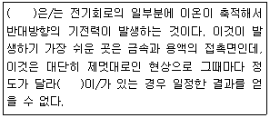
- 분극(polarization)]
- 오프셋 전위(offset potential)
- 변위 전류(displacement Current)
- 과 전위(over potential)
(정답률: 79%)
2과목: 의용전자공학
21. 다음 중 생체신호를 계측하는 방법이 아닌 것은?
- 패천 측정
- 표면 측정
- 외부 측정
- 침습적 측정
(정답률: 88%)
22. 다음 중 불대수
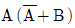
를 간단히 표현하면?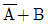
- A+B

- AㆍB
(정답률: 74%)
23. 생체신호용 전극 중 주로 신생아의 심전도 측정에 사용되는 것은?
- 흡착 전극(suction electrode)
- 부유 전극(floating electrode)
- 가용성 전극(flexible electrode)
- 금속 전극(metal-plate electrode)
(정답률: 85%)
24. 실리콘 반도체로 만들어진 트랜지스터에서 각 공핍층의 전위장벽은 상온(25℃)에서 얼마인가?
- 약 0 V
- 약 0.3 V
- 약 0.7 V
- 약 1 V
(정답률: 72%)
25. 다음 중 생체신호 측정 시 고려사항이 아닌 것은?
- 일회용 계측장비가 아닌 경우 소독이나 멸균에 주의 하지 않아도 상관없다.
- 인체에 주는 피해를 최소화 하도록 한다.
- 측정 신호 시 잡음은 문제가 됨으로 온도 소음 등 계측에 필요한 환경을 유지한다.
- 정확한 센서 부착위치와 계측 조작방법을 습득해야 하나.
(정답률: 91%)
26. 바이폴라 트랜지스터의 접합면의 온도가 상승하면 전류이득 βDC의 변화는?
- 전류이득 βDC의 증가
- 베이스 전류 IB의 감소
- 베이스-에미터 전압 VBE의 증가
- 컬렉터 전류 IC의 감소
(정답률: 72%)
27. FET 회로에서 전달 컨덕턴스는 무엇인가?
- Ohm[Ω]
- Ampere[A]
- Volt[V]
- Siemens[S]
(정답률: 78%)
28. 진공상태의 균등 자계에서 자속밀도가 1[Wb/m2]일 때 자계의 세기는?
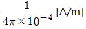
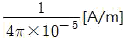
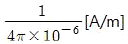
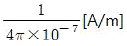
(정답률: 52%)
29. 정전용량 C[F]의 평행판 커패시터에 Q[C]의 전하가 충전되어 있을 때 극판의 간격을 1/n로 하면 정전용량은 몇 배가 되는가?
- 1/n
- n
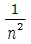
- n2
(정답률: 62%)
30. 주파수가 100Hz에서 1Hz로 변하면 몇 decade인가?
- -1
- -2
- 10
- -10
(정답률: 57%)
31. 시간 폭이 매우 좁은 트리거 펄스열이 입력단에 가해진다면, 이 펄스가 나타나는 순간마다 출력 상태가 바뀌는 플립플롭은?
- JK 플립플롭
- T 플립플롭
- RS 플립플롭
- D 플립플롭
(정답률: 59%)
32. 마이크로프로세서에서 메모리나 입출력 장치들간에 주소, 데이터, 제어신호 등을 전송하는 신호선의 명칭은?
- 캐시(cache)
- 버퍼(buffer)
- 버스(bus)
- 레지스터(register)
(정답률: 78%)
33. 안구의 움직임을 검출하고자 할 때 측정하는 생체신호는?
- EEG
- ECG
- EMG
- EOG
(정답률: 80%)
34. R-L 병렬회로에서 저항(R)은 30Ω과 유도 리액턴스(XL)는 40Ω을 병렬로 접속한 회로에 120V의 교류전압을 인가했을 때, 회로에 흐르는 전체 전류는 몇 A인가?
- 3
- 4
- 5
- 10
(정답률: 47%)
35. 실리콘 제어 정류기(SCR)에 대한 설명 중 틀린 것은?
- SCR은 PNPN의 제어 게이트가 있는 스위칭 소자이다.
- SCR은 게이트에 순방향 브레이크 오프 전압이 걸리면 도통된다.
- SCR은 RC 지연 회로에 의한 위상 제어에 의해 부하의 전력을 제어할 수 있다.
- SCR은 턴-온 된 후 게이트에 가해준 트리거 전압을 제거할 때 까지 도통된다.
(정답률: 48%)
36. 120Hz의 정현파가 전파정류기에 공급될 때 출력 주파수는 몇 Hz인가?
- 60
- 120
- 240
- 360
(정답률: 52%)
37. 최대값이 100V인 사인파 교류의 평균값은 약 몇 V인가?
- 141
- 70.7
- 63.7
- 53.8
(정답률: 57%)
38. 생체계측기기의 비선형 특성 중 입력의 크기변화의 방향에 따라 출력의 크기가 다른 현상을 무엇이라 하는가?
- 포화
- 브레이크다운
- 히스테리시스
- 불감대
(정답률: 75%)
39. 그림과 같은 카르노 맵의 가장 간단한 논리식은?
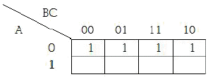
- D
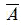
- BC
- C
(정답률: 79%)
40. 콜피츠(Colpitts) 발진기에 대한 설명으로 틀린 것은?
- Hartley 발진회로보다 높은 주파수의 발진이 용이하다.
- 트랜지스터형, FET형 등이 있다.
- 고조파가 크며 주로 장파대(長波帶)에서 사용한다.
- 트랜지스터 내에 존재하는 부유용량으로 발진주파수의 오차가 생길 수 있다.
(정답률: 69%)
3과목: 의료안전ㆍ법규 및 정보
41. 의료정보 종류 중 “병원관리”에 해당되지 않는 것은?
- 병원경영정보
- 의약품 관리
- 전염병 발생률
- 의료기기 관리
(정답률: 81%)
42. 누설전류의 종류에 따른 의료기기 BF형의 접촉전류 허용 값은? (단, 전상 상태인 경우로 가정한다.)
- 1μA
- 10μA
- 100μA
- 1000μA
(정답률: 57%)
43. 미생물에 물리적ㆍ화학적 자극을 가하여 완전히 사멸 제거하는 방법은?
- 멸균
- 소독
- 방부처리
- 살충
(정답률: 93%)
44. 레이저의 등급에 대한 설명으로 옳은 것은?
- 레이저의 안전을 판정하고 등급을 분류할 때 참고하는 기준치로는 최소허용노관량이 있다.
- IEC를 비롯한 국제기구에서는 레이저의 위해로부터 인체를 안전하게 보호하기 위하여 레이저의 파장, 출력 등의 특성에 따라 안전도를 등급으로 분류하고 있다.
- 레이저 등급은 위험수준에 따라 등급 1은 위험 수준이 가장 높고 등급 4는 위험 수준이 가장 낮은 것을 의미한다.
- 레이저의 최대허용노관량은 레이저의 분류등급에 따라 허용되는 레이저광의 방사수준을 뜻한다.
(정답률: 57%)
45. 의료기기의 허용최고온도 중 옳은 것은?
- 주위온도 25℃에서 외부도선접속용의 모든 단자:85℃
- 주위온도 25℃에서 배선 이외의 전기절연으로 사용하는 재료로 합침 또는 바니스 처리한 직물, 종이, 프레스보드:135℃
- 주위온도 10~40℃에서 정상적인 사용 시 환자에게 단시간 접촉할 가능성이 있는 기기의 부분:41℃
- 주위온도 10~40℃에서 정상적인 사용시에 조작자가 단시간만 잡는 핸들, 놉, 그림 등의 접촉가능한 자기 및 유리질 표면:85℃
(정답률: 60%)
46. 다음 중 의료기기법에서 정의하고 있는 의료기기가 아닌 것은?
- 질병의 진단ㆍ치료ㆍ예방의 목적으로 사용되는 제품
- 구조 또는 기능의 검사ㆍ대체 또는 변형의 목적으로 사용되는 제품
- 상해 또는 장애의 진단ㆍ치료ㆍ경감의 목적으로 사용되는 제품
- 장애인보조기구 중 의지ㆍ보조기 제품
(정답률: 86%)
47. 원격의료 및 재택진료의 필요성과 거리가 먼 것은?
- 필요한 의료정보를 정확하고, 신속하며, 편리하게 얻을 수 있다.
- 의료원 범위를 확대할 수 있다.
- 의료의 위치 종속성을 극복할 수 있다.
- 원격진료를 위한 표준화가 필요 없다.
(정답률: 82%)
48. ICD에 관한 설명으로 틀린 것은?
- 환자기록의 개념을 위한 원형적인 코드 체계다.
- 진단용어의 코드화를 목적으로 한다.
- ICD-9과 ICD-10은 질병코드는 장으로 그룹화되어 있다.
- 5자리와 문자 숫자 코드를 쓴다.
(정답률: 72%)
49. 의료기기의 등급분류를 위한 잠재적 위해성의 판단기준으로 틀린 것은?
- 의료기기의 인체 삽입여부
- 인체 내 삽입ㆍ이식기간
- 구강내의 화학적 변화 유무
- 의약품이나 에어지를 환자에게 전달하는지 여부
(정답률: 84%)
50. 일반적인 의료용 접지센터, 의료용 콘센트 및 의료용 접지 단자는 의료실의 바닥 위 기준으로 몇 cm 이상의 높이에 시설하여야 하는가?
- 30cm
- 50cm
- 80cm
- 100cm
(정답률: 63%)
51. 의료기기의 기계적 강도시험의 종류가 아닌 것은?
- 밀기시험
- 거친충격시험
- 낙하시험
- 누설접지시험
(정답률: 80%)
52. 병원정보시스템(HIS)을 구성하는 요소와 관계가 가장 먼 것은?
- 병렬처리시스템
- 사무자동화시스템
- 의료영상저장전송시스템
- 처방전달시스템
(정답률: 72%)
53. 국가에서 정하는 특정고압가스 중 의료가스에 해당하는 것은?
- 헬륨
- 천연가스
- 탄산
- 압축산소
(정답률: 84%)
54. 다음 의료기기 등급분류에 알맞은 등급은?
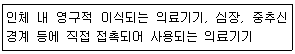
- 1등급
- 2등급
- 3등급
- 4등급
(정답률: 77%)
55. 보건관련 제품의 KS마크로 불리며, 한국보건산업진흥원이 의료기기 등의 품질과 기능을 평가해 기준을 통과한 제품에 부여하는 인증제도는?
- GH 마크
- CE 마크
- ISO 마크
- EMI 마크
(정답률: 68%)
56. 다음 ()안에 알맞은 말은?
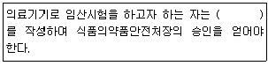
- 임상시험계획서
- 임상시험심사의뢰서
- 임상시험예정신청서
- 임상시험실시기관 지정신청서
(정답률: 80%)
57. 누설전류에 대한 설명 중 틀린 것은?
- 전위가 같은 인접한 두 절연선들 사이에서 미세하게 흐르는 작은 전류를 말한다.
- 접속도선을 갖는 장비에서 누설전류는 대부분 두 도체 사이의 표유용량을 통해 흐른다.
- 전기장비 내의 각종 도체에서 섀시나 환자에 연결된 도입선으로 누설전류가 흐를 수 있다.
- 심장에 전기적 접속을 갖는 환자에게 누설전류가 흐르게 되면 마이크로 쇼크를 받을 수 있다.
(정답률: 61%)
58. 의료폐기물의 수집ㆍ운반의 경우 잘못 설명한 것은?
- 의료폐기물은 전용용기에 넣어 밀폐 포장된 상태로 의료폐기물 전용의 운반차량으로 수집ㆍ운반해야 한다.
- 의료폐기물은 흩날림ㆍ유출 및 악취의 새어나옴을 방지할 수 있는 밀폐된 적재함이 설치된 차량으로 운반해야 한다.
- 의료폐기물의 수집ㆍ운반차량은 차체는 빨간색으로 색칠하여야 한다.
- 의료폐기물의 운반차량은 운반 중에는 항상 냉장설비가 가동되어야 한다.
(정답률: 84%)
59. 다음 중 의료기기취급자에 해당하지 않는 자는?
- 의료기기 수출업자
- 의료기기 수입업자
- 의료기기 수리업자
- 의료기기 임대업자
(정답률: 73%)
60. 의료기기의 전기ㆍ기계적 안전에 관한 공통기준규격에서 규정한 의료기기와 관련된 누설전류의 종류가 아닌 것은?
- 접지누설전류
- 접촉전류
- 표유누설전류
- 환자누설전류
(정답률: 72%)
4과목: 의료기기
61. 분광광도계에서 파장선택기로 사용 가능한 것은?
- 저역감쇠필터
- 고역감쇠필터
- 간섭필터
- 섬유필터
(정답률: 65%)
62. 제외충격파쇄석기의 특징으로 틀린 것은?
- 결석 주위조직의 손상이 없다.
- 시술 후 합병증이나 후유증이 적다.
- 반복 시술이 불가능하다.
- 입원, 마취, 투약 등이 필요 없다.
(정답률: 82%)
63. 청력검사기의 구성 요소가 아닌 것은?
- 버튼과 표시기
- 청력헤드셋
- 기록계
- 근전도기
(정답률: 82%)
64. 다음 중 분광광도법으로 검사할 수 없는 항목은?
- 성분 검사
- 혈청 검사
- 적혈구/백혈구 검사
- 호르몬 검사
(정답률: 70%)
65. 다음 영상기기 중 도플러 효과를 응용하는 기기는?
- 초음파스캐너
- MRI
- X-선 CT
- PET
(정답률: 70%)
66. 심전도 유도법에 따라 체표면의 일정부위에 전극들을 부착시키고 두 전극간의 전위차 또는 체표면상의 한 점 전위변화를 전극으로 유도하여 신호 증폭 후 그래프나 곡선으로 기록하는 의료기기는?
- MEG
- EMG
- ECG
- EEG
(정답률: 86%)
67. 다음 중 선형가속기(LINAC)에서 전자가 발생되어 X-선을 발생시키는 순서로 올바른 것은?
- 전자총→도파관→manetron→가속관→표적
- 전자총→manetron→도파관→가속관→표적
- 전자총→manetron→가속관→도파관→표적
- 전자총→가속관→manetron→도파관→표적
(정답률: 63%)
68. 혈압을 간접측정하기 위한 기구에 해당하지 않는 구성으로 연결된 것은?
- 압박대와 가압구(고무구)
- 가압구(고무구)와 압력조절기
- 압력계와 가압구(고무구)
- 압력계와 농도계
(정답률: 79%)
69. 박동형 인공심장에 대한 설명으로 틀린 것은?
- 인공판막이 필요 없다.
- 전기기계식 및 전기공압식으로 만들 수 있다.
- 자연심장과 유사한 박동성 혈류의 구현이 가능하다.
- 완전인공심장이나 좌심실 보조장치 모두 박동형 인공심장으로 구현 가능하다.
(정답률: 82%)
70. 수소원자의 자기회전비율(gyromagnetic ratio)운 42.58MHz/T이다. 2T 자계에서 수소원자의 라모 주파수(Larmor Frequency)는?
- 21.29MHz
- 63.87MHz
- 85.16MHz
- 127.74MHz
(정답률: 65%)
71. 초음파를 이용한 뇌혈류진단기로 측정할 수 없는 생체 신호는?
- 심박동 계수
- 혈류 속도
- 혈중 산소 농도
- 저항 계수
(정답률: 59%)
72. 마취가스에 사용되는 가스의 종류가 아닌 것은?
- 공기
- 일산화탄소
- 산소
- 질소
(정답률: 68%)
73. 제세동기의 원리 중에서 제세동기의 성공에 관여하는 요인 중 하나가 경흉저항이다. 경흉저항에 관여하는 인자가 아닌 것은?
- 전극의 크기
- 전극에 가해지는 압력
- 전극간의 거리
- 맥박 주기
(정답률: 59%)
74. 피부과 수술에서 널리 사용하는 것은?
- 레이저기기
- 간섭파치료기
- 고주파치료기
- 저주파치료기
(정답률: 78%)
75. 초음파의 물리적 성질 중 산란에 대한 설명으로 옳은 것은?
- 음파가 여러 방향으로 방사되거나 굴절하는 현상
- 서로 다른 매질 사이의 경계면에서 음파의 방향이 굴절되어 통과하는 현상
- 음파가 매질을 진행하면서 음파의 에너지가 매질에 흡수되는 현상
- 서로 다른 매질 사이의 경계면에 음파가 입사되면 일부는 투과하고 일부는 반사되어 되돌아오는 현상
(정답률: 61%)
76. CT-번호의 단위는 무엇인가?
- dB
- 1p/cm
- dBm
- HU
(정답률: 71%)
77. 다음 중 수액펌프의 주된 용도는?
- 수압을 낮추기 위해서
- 환자의 혈액 순환을 돕기 위해서
- 수액을 정확하게 제어하기 위해서
- 환자의 체온을 일정하게 유지하기 위해서
(정답률: 76%)
78. 마취기 시스템의 구성요소가 아닌 것은?
- 증발기
- 통풍기
- 유량계
- 응축기
(정답률: 76%)
79. 뇌파는 진동수의 범위에 따라 α파, β파, γ파, θ파, δ파로 구분되어지는데 각 뇌파에 대한 설명으로 틀린 것은?
- δ파:0.5~4Hz의 주파수 영역에서의 신호로 꿈을 꾸지 않는 숙면과정에서 전형적으로 나타내는 신호이다.
- θ파:4~8Hz 사이의 주파수 영역에서의 신호로 가벼운 수면과정이나 강한 환경자극에 의해 반응한다.
- β파:14~30Hz 사이의 주파수 영역에 신호로 REM 수면상태에서 나타난다.
- α파:30Hz 이상의 주파수 영역의 신호로 강한 집중 시 잘 나타난다.
(정답률: 67%)
80. 감마카메라의 구성 요소가 아닌 것은?
- X-선관
- 시준기
- 섬광결정체
- 광전자증배관
(정답률: 63%)
5과목: 의용기계공학
81. 베어링의 마찰 상태에서 완전 윤활 마찰을 설명한 것은?
- 마찰저항이 가장 크며 발열이 크다.
- 마찰저항이 가장 작으며 발열이 크다.
- 마찰저항이 가장 크며 발열이 작다.
- 마찰저항이 가장 작으며 발열이 작다.
(정답률: 62%)
82. 초음파 의료영상이미지와 관련 없는 광학 특성은?
- 초음파의 굴절
- 초음파의 회절
- 초음파의 반사
- 초음파의 산란
(정답률: 59%)
83. 유방 성형에 실리콘오일이 주입된 실리콘 막 임플란트가 주오 사용된다. 실리콘오일의 분자량이 740g/mol이며 비중이 1.5g/cm3이고, 시술 후 생체 내에서 임플란트 막을 통한 확산되는 실리콘오일의 확산계수(D)가 5×10-17cm2/s이라면, 표면적이 400cm2이고 두께가 1mm인 실리콘 막을 통해 시술 후 1년 동안 확산되어 빠져나가는 실리콘 오일의 무게는?
- 4.68μg
- 9.46μg
- 46.8μg
- 94.6μg
(정답률: 44%)
84. 형상기억효과와 초탄성효과를 동시에 가지고 있는 합금은?
- 폴리에틸렌(PE)
- 의료용 Co~Cr 합금
- NiTi 합금
- 타이타늄 합금
(정답률: 73%)
85. 보조기의 목적이 아닌 것은?
- 체중의 지지
- 변형의 예방 및 교정
- 병변 조직의 치유
- 불수의 운동, 상실된 기능의 대상 및 보조
(정답률: 69%)
86. 생체금속 재료로 사용되는 티타늄(Titanium)에 대한 설명으로 옳은 것은?
- 스테인리스강이나 코발트 합금에 비해 비중이 크다.
- 스테인리스강이나 코발트 합금에 비해 강도가 더 크다.
- 산화피막(TiO2)을 형성하여 내부식성이 좋다.
- 스테인리스강이나 코발트 합금에 탄성계수가 크다.
(정답률: 60%)
87. 수술용 흡수성 봉합사로 사용되는 고분자 재료는?
- PGA
- PET
- TEELON
- SILICONE
(정답률: 62%)
88. 각 관절을 둘러싸고 있는 형태에 따라 분류한 장지보조기가 아닌 것은?
- 견-주관절 보조기(SEO:Shoulder Elbow Orthosis)
- 주관절 보조기(EO:Elbow Orthosis)
- 수근관절 보조기(WHO:Weist Hand Orthosis)
- 장하지 보조기(KAFO:Knee Ankle Foot Orthosis)
(정답률: 66%)
89. 생체에서의 전기쇼크에 대한 설명으로 틀린 것은?
- 손으로 만졌을 경우 찌릿하게 느낄 수 있는 정도의 전류를 최소감지전류라 한다.
- 생체에 흐르는 전류가 10~20mA 이상이 되면 팔다리의 근육을 자유롭게 움직일 수 없게 되는데, 이 한계를 이탈전류라고 한다.
- 생체에 흐르는 전류가 생체 표면뿐만 아니라 체내에서도 흐르게 되어 심장에 전류가 흐르게 되면 심실세동을 일으킬수도 있다.
- 전류가 피부를 통해 체내로 흘러들어가고 다시 체외로 나올 때 발생하는 전기쇼크를 마이크로 쇼크라고 한다.
(정답률: 68%)
90. 생체전자기적 특성을 활용한 기기 및 설명으로 틀린 것은?
- 뇌의 전기적 활동에 의해 미세한 자장이 형성되어 이를 뇌자도라고 한다.
- 폐에 축적된 자성 미분체에 의해 발생하는 자장을 측정하는 것을 폐자도하고 한다.
- 심장의 강한 전기적 활동에 의해 발생되는 심자도는 지구의 자장보다 강한 강도를 가지고 있다.
- 생체의 자기장 특성을 이용한 의료기기로 자기공명영상(MRI)이 있다.
(정답률: 70%)
91. 316 스테인리스강(316 Stainless Steel)의 주성분 중에서 내부식성을 향상시키는 금속원소는?
- NI(니켈)
- Cu(구리)
- Mo(몰리브덴)
- Co(코발트)
(정답률: 58%)
92. 단면적이 0.2m2인 강선에 100N의 인장력을 가했다면 그 강선에 발생한 응력은?
- 50Pa
- 100Pa
- 200Pa
- 500Pa
(정답률: 38%)
93. 생체역학에 사용되는 다음 기본 단위들 중 벡터로 표현할 수 있는 것은?
- 모멘트
- 온도
- 에너지
- 일률
(정답률: 68%)
94. 물리적 에너지 중에서 유체역학을 이용한 의공학 기술은?
- 근력계측
- 청음
- 혈류계측
- X선 촬영
(정답률: 74%)
95. 일반적으로 방사선의 생물학적인 효과와 관련 없는 요인은?
- 방사선의 조사선량
- 선량율
- 방사선 조사부위
- 조사부위의 온도
(정답률: 68%)
96. 기어의 피치원 지름을 D. 기어의 잇수를 Z라 할 때 모듈은?
- Z/D
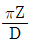
- D/Z
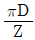
(정답률: 65%)
97. 생체조직의 수동적 특성이 나타내는 특이성이 아닌 것은?
- 선형성
- 이방성
- 온도 의존성
- 경시변화
(정답률: 49%)
98. 경조직의 역할 및 특징에 대한 설명 중 틀린 것은?
- 뼈는 크게 치밀골과 망상골로 분류된다.
- 치밀골은 단단하고 치밀하여 뼈의 외곽부분을 구성한다.
- 망상골은 스펀지모양으로 구멍이 많은 형태를 가진다.
- 뼈에서 혈구 생산을 담당하는 곳은 치밀골이다.
(정답률: 71%)
99. 4kN의 하중을 받는 폭 800mm, 두께 100mm인 강판에 허용전단응력이 20N/mm2이고 지름이 10mm인 리벳을 이용하여 1줄 겹치기 리벳이음을 하려고 한다. 리벳의 허용 전단응력을 고려할 때 최소 필요한 리벳의 수는?
- 2
- 3
- 4
- 5
(정답률: 46%)
100. 의료기기가 혈관 내로 들어와서 혈액과 접촉하면서 의료기기의 표면에서 일어나는 반응이 아닌 것은?
- 혈소판 흡착 및 응집
- 단백질의 흡착 및 변형
- 항원-항체 반응
- 피브린 네트윅 형성
(정답률: 64%)
- 중심소체(centrole)가 없어 세포분열이 불가능하다: 맞는 설명이다. 중심소체는 세포분열에 필요한 역할을 하는데, 신경세포는 세포분열을 하지 않기 때문에 중심소체가 없다.
- 하나의 축색돌기는 한 개의 축새(axon)만을 갖는다: 맞는 설명이다. 축색돌기는 신경세포의 신호전달을 담당하는 구조로, 한 개의 축새만을 갖는다.
- 마이엘린(myelin)은 축색을 감싸고 있다: 맞는 설명이다. 마이엘린은 신경섬유를 감싸고 있는 물질로, 신경전달을 빠르고 효율적으로 하기 위해 존재한다.
- 각각신경세포의 신경섬유는 원심성 신경 섬유이다: 틀린 설명이다. 각각신경세포는 다양한 형태의 신경섬유를 갖는다. 예를 들어, 망상신경세포는 여러 개의 축색돌기를 갖는 다중축색돌기(multipolar) 형태를 띠고 있으며, 원추돌기신경세포는 하나의 축색돌기와 여러 개의 수상돌기를 갖는 원추돌기(pyriform) 형태를 띠고 있다.